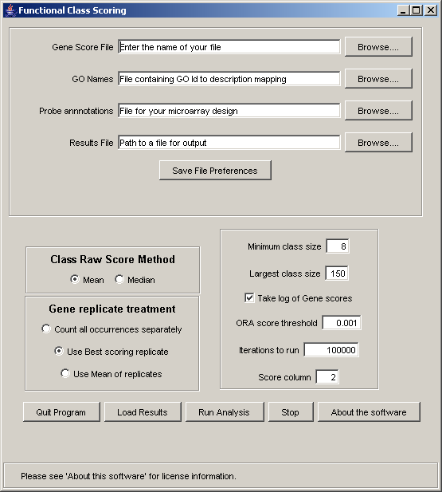
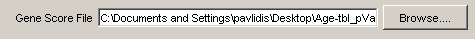
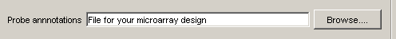
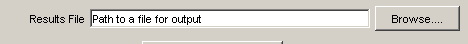
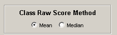
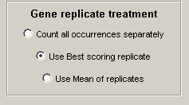
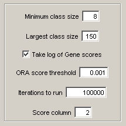
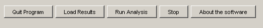
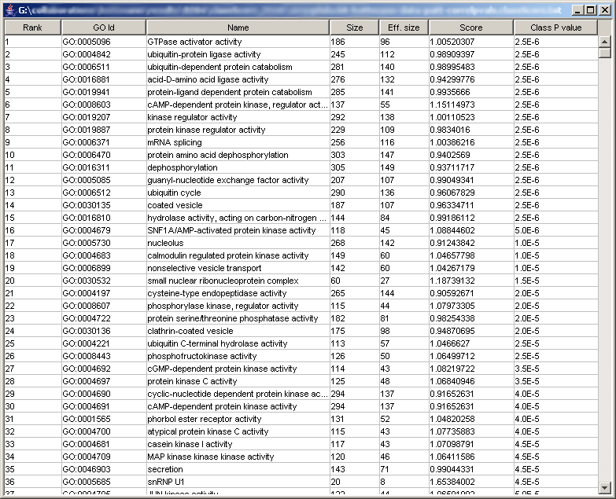
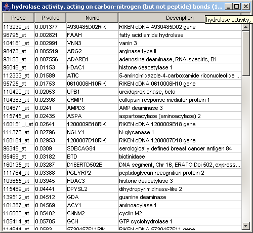

Gene Ontology analysis for microarray data
News
April 1 2004 - New version released (1.1), adding the ability to interactively browse your results. This version also uses a new format for the input annotations files, reducing the number of input files by one. It is not compatible with the old format annotation.
November 24 2003 - Minor but catastrophic bug fixed. Please download a new copy of the software! In addition, we have updated the format of the annotation files, which were accidentally left without file names in the archives. As an aid to debugging, we have also added a feature to the software: while the software is running a "console window" will open that has additional messages that do not appear on the graphical interface. If you encounter a problem with the software, please send us a copy of the error messages to assist us in improving the software.
November 20 2003 - First release
Introduction
ClassScore is a software tool for generating "functional class scores" based on scores given to individual genes, typically from a microarray data set. It implements two major methods for doing this analysis: Over-representation analysis (essentially based on the hypergeometric distribution) and a resampling based approach described by Pavlidis, Lewis and Noble, Proceedings of the Pacific Symposium on Biocomputing 7. pp 474-485, 2002. (Download a reprint; the methods implemented are variants on the "experiment score" referred to in that paper).
Other publications using this software include:
- Sibille, E., Arango, V., Galfalvy, H.C., Pavlidis, P., Ellis, S.P. and Mann, J.J. (to appear) Genomic analysis of depression and suicide in human prefrontal cortex. Neuropsychopharmacology, in press.
- Pavlidis P., Qin J, Arango V, Mann J, Sibille E. (2003) Using the Gene Ontology for microarray data mining: A comparison of methods and application to age effects in human prefrontal cortex. Neurochemical Research, in press.
- Pavlidis, P., Qin, J and Sibille E (2003) Statistical analysis of Gene Ontology classes as tools for understanding gene expression changes in the brain. Society for neuroscience Annual Meeting Abstract 758.12. (download the powerpoint version of the poster)
This diagram shows an outline of the process use for the resampling-based method.
{kind=link}
This page describes how to use the graphical user interface (GUI) for ClassScore. You can download the software using this link. The software is free to academic users. Users interested in the source code should contact Paul Pavlidis.
Getting more help
You might look at the following:
- A glossary of terms that are used in this document.
- A FAQ (Frequently asked questions)
- Example input and output files. These are from the Affymetrix HG-U133A array.
Credits
The software was written by Paul Pavlidis, based on an earlier version of the software written by Shahmil Merchant and Edward Chen, based in turn on a Perl implementation by Paul Pavlidis. Our Gene Ontology annotations were obtained through the Gene Ontology Consortium web site.
Installing the software
To run the software, you need four things:
- Software file: You can download the software using this link. The software file is "zipped" and must be unpacked before use. Save the software file (classScore.jar) to your hard drive in some convenient location.
- Java 1.4 or higher: You must have a recent Java runtime installed on your computer. You can get it from Sun (look for "Download J2SE JRE") but there is a good chance it is already installed on your machine.
- Annotation files for your microarray design: You will need several files besides the data you provide in order to run the analysis. See Inputs, below. These files contain the annotations for GO categories and common microarray designs. You can download these files from our web site.
- Your data file: This is explained in more detail below, but look at a sample input file.
Running the software
Double-click on 'classScore.jar'. You may see a plain text 'console' window but shortly a graphical window should appear containing several fields for input. To perform a run, you have to set the fields appropriately and then press "OK". You can perform multiple runs without closing and restarting the software. The window should like something like this (we're working on the interface, so if it looks a little different, don't be alarmed).
Inputs
The following fields must be set by the user on startup.
- Gene Score File
A user-supplied file containing the data. This is a set of gene scores (typically be p-values, which the software converts to -log(pvalues)). The first column is the probe id, the second (or higher) column is the p value. A one-line header is expected. Here is an example. Note that we have found that removing genes that are "not expressed" can be beneficial to the analysis. Otherwise, this file should contain scores for all the genes on your microarray, not just the selected genes. So if your microarray has 10,000 genes on it, and you filter out 3000 that are not detectable, the file you use for the analysis will have 7000 rows.
If the gene scores are not in the second column of the file, you need to set the "score column" parameter, explained below.
- GO Biological Names File:
A file containing the names of the gene classes. We supply this.
- Probe annotation file:
A file containing a list of the class membership of probes on the array and the relationship between probes and genes. We supply this.
- Results File:
A name of an output file. Your results will be saved to this file. Here is an example.
Options
You can run the software without setting any of the following options, but you will probably want to at least understand what they do.
-
Raw Class Scoring generation

Choose the method to be used for class scoring based on resampling. Over-representation p values are always generated as well.
- Mean: A GO class is scored based on the mean of the scores of the genes in the class (Default).
- Median: Use the median instead of the mean. This method is slower than calculating the mean.
-
Replicate treatment

This refers to how 'replicates' of genes are handled. A replicate is when two probes on an array assay the same gene, as indicated in the 'probe to group mapping file'. Normally, Default=mean
- Count all occurrences separately: Ignores the replicate issue entirely and treats each probe as a separate gene. This can yield inflated (or deflated) class scores so normally you won't use this option. (we keep it for experimental purposes)
- Use best scoring repliate: If a gene occurs twice (or more) in the data, it is only counted once, and given the score of the best-scoring replicate. This option is less conservative than using the mean. We use it as the default.
- Use mean of replicates: A single value is calculated for all data points representing the gene. This value is the mean of the pvalues for all probes in the group. This option assumes that taking the mean is a sensible thing to do: if you don't log transform your pvalues (by checking the 'log transform' box, explained below), this won't work right.
-
Other parameters you can set

- Min class size: Classes with fewer genes than this will not be evaluated. Default=8
- Largest (max) class size: Classes with more genes than this will not be evaluated. Default=150
- Take log of gene scores: This should be checked if your input values are p values.
- Iterations: This sets the number of random trials which will be used to generate background distributions. The higher you set this, the longer it will take to run, but your p-values may be more precise. We don't suggest setting this above 200,000 unless you find you have many classes which have 'maxed out' p values. The number of iterations has no effect on the over-representation analysis. Default=100,000
- ORA score threshold: This option sets the gene score which will be used to select genes for over-representation analysis. Default=0.001 (assuming you are using p values)
- Score column: The column in the data file where your gene scores are stored. The default is 2 (the first column, containing the probe identifiers, is column 1). Changing this allows you to have multiple gene scores in the same input file and analyze them without loading a new file.
Ready to run?
- The "Quit program" Button quits the software. This can also be done by clicking on the 'close' box on the window title bar.
- The "Load results" button allows you to review a previous analysis. The file to be loaded is the one named in the "Results file" field. In this case, the settings of the various parameters don't matter.
- The "Run analysis" button starts the process of calculating the scores. This can take a couple of minutes especially if you have set a large number of iterations. The status bar will say "Running" once the run is underway.
- The "Cancel" button will abort your run. The status bar should read "Ready" after you hit cancel.
When the software is done with an analysis, the status bar will read "Done".
Outputs
When your analysis is done or loaded, you will see a new window that lets you browse the results. The results are also saved in the chosen results file, if this is a new analysis and not a reloaded one. Here is an example:
The columns in this table are:
- class : Name of the class, with the GO id number.
- size : How many probes on the array are in the class. Note that this is the NOT the number of genes, which is the "effective size" (see below).
- effective size : If you used Count all occurrences separately, then this will be equal to the "size"; otherwise it will be the number of unique genes (e.g., replicate groups). This is always less than or equal to the size since some genes are represented multiple times on an array (see "replicate groups", above). This is the value used in the calculations.
- raw score : The raw class statistic based on the selected method. High values are better. See "raw class score", above.
- resamp pval : The p value based on the raw score. Low values are better. Note that p values that would be calculated as zero are adjusted to be 1/(2*iterations). Thus if you had 100,000 iterations, the best p value would be 1/(2*100000) or 5x10^-6.
Note that the flat text file output contains additional columns that may be of interest.
Clicking on one of the classes will open a new window that allows you to browse the results in more detail:
Clicking on the headings of the columns in this window re-sorts the table by that column.
About the flat file output
The output is a tab-delimited text file that contains the results for each class in a simple tabular format. The best-scoring classes (based on the resampling-based score) are listed first. The output file can be opened in Excel and sorted etc. easily. There is an example output file to look at. The columns are:
- class : Name of the class, with the GO id number.
- size : How many probes on the array are in the class. Note that this is the NOT the number of genes, which is the "effective size" (see below).
- effective size : If you used Count all occurrences separately, then this will be equal to the "size"; otherwise it will be the number of unique genes (e.g., replicate groups). This is always less than or equal to the size since some genes are represented multiple times on an array (see "replicate groups", above). This is the value used in the calculations.
- raw score : The raw class statistic based on the selected method. High values are better. See "raw class score", above.
- resamp pval : The p value based on the raw score. Low values are better. Note that p values that would be calculated as zero are adjusted to be 1/(2*iterations). Thus if you had 100,000 iterations, the best p value would be 1/(2*100000) or 5x10^-6.
- N over pval cut: For overrepresentation analysis, the number of genes which met the criterion set in "ORA score threshold"
- ORA pval : p-value for the classed based on the overrepresentation analysis. This is calculated using the cumulative binomial approximation to the cumulative hypergeometric distribution.
- Corrected pval: An experimental feature to apply multiple test correction to the resampling-based class scores. The method used is Benjamini-Hochberg's false discovery rate. Rows where this column is 1 meet a FDR criterion of 0.05.
- Same as: Lists classes that are identical in the genes they contain to the one listed in the first column. Most slots will be blank.
- Similar to: Lists classes that are similar in the genes they contain to the one listed in the first column. (Experimental, currently not used)